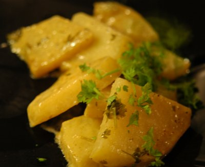

| Zutaten für 4 Personen: | |
| 750 g | Kohlrabi |
| 30 g | Butter |
| 3 EL | Weisswein |
| 3 EL | Wasser |
| 150 g | Sauerrahm |
| 1 TL | Salz |
| 2 TL | Kerbel |
| 1 Prise | Muskat |
Kohlrabi waschen, Herzblättchen wegschneiden und beiseite legen. Gemüse schälen; in 1/2 cm dicke Scheibchen schneiden.
Ca. 5 Minuten in der Butter dämpfen. Dann mit Wein und Halbrahm ablöschen.
Salz, Muskat und Kerbel dazugeben. Gericht zugedeckt bei kleiner Hitze ca. 10 - 15 Minuten garkochen.
Herzblättchen fein hacken und über das Gemüse streuen. Statt Kerbel kann man auch 50 g frische grob gehackte Kresse verwenden.
Herbert Eigenmann, Code: KOK
Hat sehr toll geschmeckt. Der Kohlrabi und der Kerbel haben aber einen starken Geschmack der mich leicht an Fenchel erinnert. Ist vielleicht nichts für alle Geschmäcker. RE 31.12.2009
@LINKBACK_TAG@ @WAKELOCK@